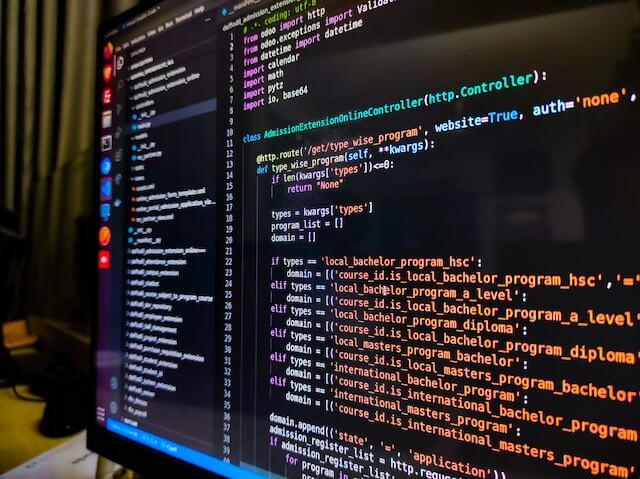

<!DOCTYPE html>
<html lang="pt-br">
<head>
    <meta charset="UTF-8">
    <meta name="viewport" content="width=device-width, initial-scale=1.0">
    <title>Estrutura de repetição </title>
</head>
<body>
    <script>
        let numero=parseInt(prompt('Digite um número'));
        x=1;//nesse momento a variavel x recebe o valor 1 

        //enquanto for verdadeiro "true" que a variável x é menor ou igual a 10

        while (x<=numero){
            document.write( x +' '); //irá imprimir na tela o valor de x com quebra de linha

               // aqui incrementamos a variável x até seu valor se tornar verdadeiro na condição
            x++;
        }

    </script>
    
</body>
</html>